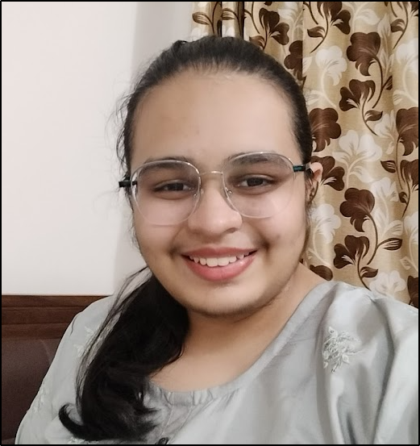

Krutika Gundecha

Summary
I am an aspiring web developer currently learning full stack web development.
I am also interested networking and cybersecurity as well as AI and ML which I believe will
soon change the world as we know it. I am hardworking and ambitious and my goal is to become the
best at whichever job I dedicate myself to.
Education
- Class 1 to Class 4- St. Mira's School, Pune
- CLass 5 to Class 10- St. Helena's School, Pune
- Class 11 to Class 12- Bishops School and Junior College, Pune
- IIT Roorkee- B.Tech in Metallurgical and Materials Engineering- Graduating 2026
Work Experience
- I am a student so I have not had the oppurtunity to take on much work yet!
- But I have done a few projects -- listed in my portfolio
- I am currently an editor for Kshitij-The Literary Magazine of IIT Roorkee
- Currently a full time member of ACM Student Chapter : IIT Roorkee
- Currently a Sponsorship Executive for Cognizance - the tech fest of IIT Roorkee
Skills
- HTML,CSS
- Python
- C++,Java
- Linux and bash
- Forays into basic cybersecurity
Certifications and Achievements
- Cyber Defense Engineering using Python by Cybervidyapeeth Foundation
- Intro to ML,DL and Computer Vision but AI Club, IITM
All of my verified certificates are on my LinkedIn profile!
Links to my social Networks
My Gallery to get a glimpse into my life!